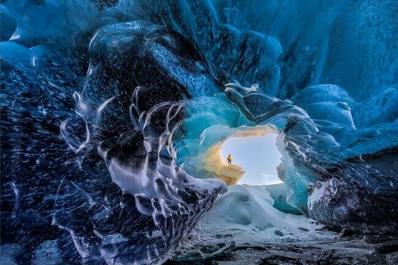
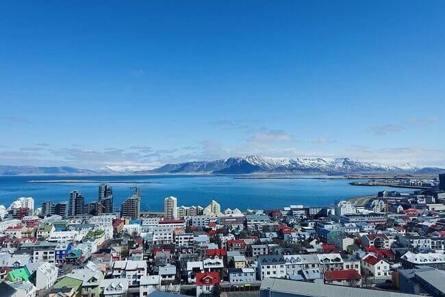

morly旅游圈
冰岛共和国，简称冰岛，是北大西洋中的一个岛国。位于大西洋和北冰洋的交汇处，北欧五国之一，国土面积为10.3万平方千米，人口约为32万，是欧洲人口密度最小的国家。首都是雷克雅未克，也是冰岛的最大城市，首都附近的西南地区人口占全国的2\3。 冰岛地处大西洋中脊上，是一个多火山、地质活动频繁的国家。内陆主要是平原地貌，境内多分布沙质地、冷却的熔岩平原和冰川。冰岛虽然位于北极圈边缘，但受北大西洋暖流影响气候适宜。 根据《殖民之书》的记述，欧洲定居者的历史最早可追溯至公元874年，维京人殷格·亚纳逊一行人是冰岛最早的永久定居者，其他更早的定居者仅在冰岛过冬。1262-1918年冰岛成为了挪威的一部分，之后属丹麦王室治下。1918年冰岛宣布独立并在1944年成立共和国。 冰岛是一个高度发达的资本主义国家，国民拥有国家提供的健康保险和高等教育等北欧福利系统。 2018年6月，2018全球最安全旅游目的地揭晓，冰岛以93分排名第二。
还记得琼恩和耶哥蕊特在岩洞温泉中的定情之吻（以及……）么？冰天雪地里万籁俱寂，仿佛世界只剩那一刻的美好。后来，当耶哥蕊特弥留之际对琼恩说出那句“我们当初不该离开那个岩洞”的时候，有多少人的心碎了？ 现实中的两位演员——基特·哈灵顿和萝丝·莱斯利也是一对儿情侣，而且两人还真是在拍摄期间擦出的火花。据Kit自己的描述，外景地冰岛变幻的霞光和清冽的冰川绝对也是有加成的……
Tips:
1,冰岛是一个没有铺设铁路的国家，虽然有几大公司联合提供服务的长途汽车覆盖网络，但是在停车点的设置上却不那么方便，特别是由于冰岛各大景区一般在公路支路延伸处，所以往往下车点距离景区还得走上一段距离，使得花在路上的时间让行程变得很紧凑。
2,冰岛法律规定车内所有人必须系安全带，不论是司机、副驾驶，还是后排乘客，无一例外。冰岛的刑罚负责年龄为15岁，法律规定，车内15岁以下乘客的行为责任由驾驶者承担，如15岁以下的乘客在行车过程中未系安全带，驾驶者负全责，并可能承担15000克朗的罚款。
3,我们都知道冰岛有名的环岛公路，但是还有一种F开头的公路，F代表fjall，在冰岛语中是山的意思。F公路在地图和路标上会以F开头来标识，如F26、F88等。 F公路的开放日期视天气状况而定，但通常都是6月中旬与下旬前后。 F级公路原则上只允许四驱车同行，如果你开了两驱车上路，那么很遗憾，你的租车保险就失效了。 驶上任何一条F级公路前多了解一些前方的状况能够最大程度避免险情发生。
4,如果要在冬天开车到郊外，一定要开配有冬季轮胎的四驱车，此外要再开慢一些，最好在车上备一些保暖衣物和食物，以备不时之需。为了安全，行程一定不能安排的太紧，否则遇到极端天气还要赶路，很容易酿成事故。
内容整理至网络，如有侵权，请联系我们！1255394075@qq.com
 